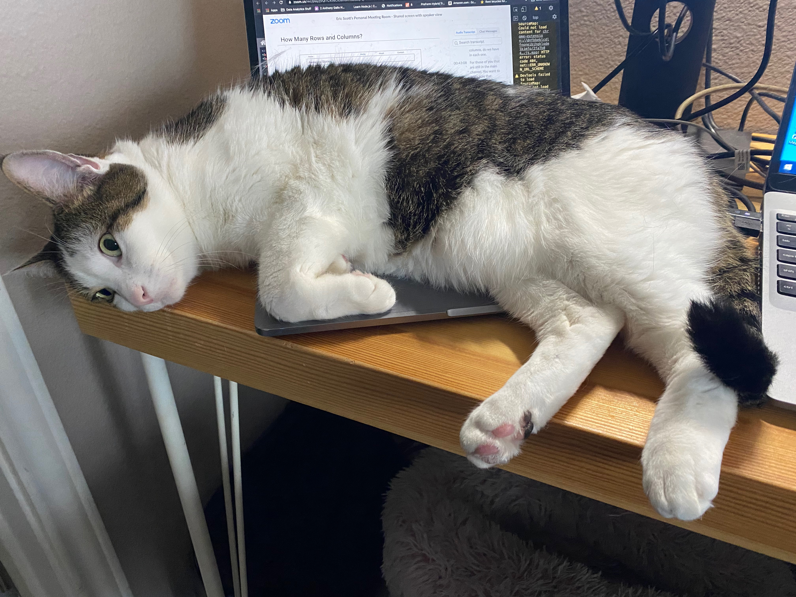

It's actually three cats. I can't have a favorite one. My home is a happy place with them.

Popcorn whines a lot. He loves affection. He needs affection: All the time. He feels left out
since there are kittens in the house,
despite the fact that he asks for and gets the most attention. He likes to
snuggle.
Tina loves records! She's quite picky, actually. Once a record gets put on the turntable, she
tries
to make the platter spin. She's fluffy and gregarious, so she gets a lot of attention.
She has an underveloped eye, but the vet said she was born that way